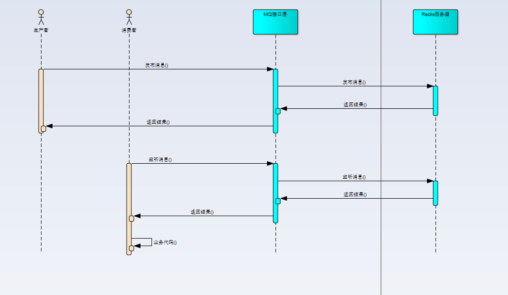
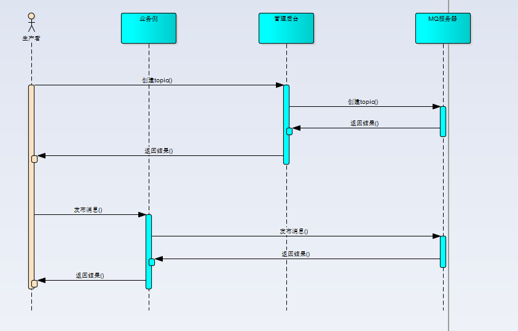
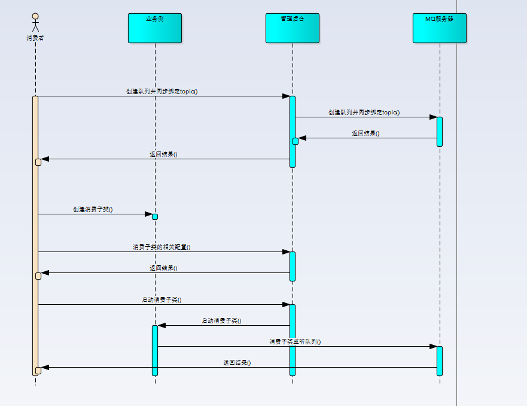

前言
消息队列（Message queue，下面简称MQ）是一种进程间通信或同一进程的不同线程间的通信方式，常用于消息分发、系统解耦，流量削峰填谷等方面，是大型分布式系统不可或缺的中间件。
消息队列有两种模型，点对点和发布/订阅模型。小雨伞发展初期，只使用了点对点模型就满足了我们的需求，而随着业务的发展，原有的点对点模型越来越难以支撑业务的发展，增加发布订阅模型的事情也提上了日程。
消息队列1.0
我们初期只采用了消息队列的点对点模型。原因如下：
- 业务模型相对比较简单，点对点已经满足需求
- redis 实现的发布/订阅模型，其可靠性无法满足我们的需求
业务发展初期，小雨伞的消息队列的使用场景主要于以下方面：
- 支付完成异步通知出单
- 出单系统將消息分发下去，分发给每个保险公司的独立的出单进程进行处理
- 邮件的异步发送
- 订单系统通知触达系统给用户发送触达
上面的业务需求都是单系统-单系统之间的交互，或者是系统内部进行消息分发，只是用点对点模型已经可以满足其要求。所以我们并没有花太多时间再去调研其它功能更完备，但也更复杂的消息队列。
redis的发布与订阅功能，其无法对消息进行持久化，意味着一旦消费者异常断开，此时若有消息发送，那么消费者会直接丢失此消息。
而在我们的业务环境中，我们发现 phpredis 维持的连接中，如果长时间没有消息传输，其容易进入一个假死的状态，就是常驻进程还在运行，但是其与 redis 服务器的连接却已经断开了。在我们的业务场景下，这也是比较常见的，毕竟有的保险公司出单量少，并且系统高负载的情况下，redis 连接断开也会更加频繁，我们也要考虑到这些异常情况。所以，我们需要更可靠的消息队列模型。
小雨伞消息队列1.0底层是使用redis的list数据结构来实现的，通过rpush与lpop操作实现消息的入栈与出栈。其虽然没有实现发布/订阅模型，但是其点对点模型是相对可靠的。因为就算是消息消费者因为异常原因断开连接，消息也会保存在 redis 服务器的 list 中，只要消费者重新恢复连接，就能够取到之前的消息进行消费。其可用性要比 redis 自身的发布/订阅模型要高。
redis正常情况下全走内存，读写效率都很高。这也是我们消息队列1.0选用redis的一个重要原因。
消息队列1.0主要时序图

消息队列2.0
但是随着业务的增长，消息队列1.0在功能和管理上越来越难以满足我们的业务需求。
- 多个系统都要消费同一条消息，比如活动系统、触达系统、结算系统都需要处理同一条订单的消息，消息队列1.0情况下，我们采用了集中式处理的方式，就是在收到消息的地方，链式进行活动、触达、结算的调用。虽然功能上暂时能够满足需求，但是弊端也很明显，代码耦合严重，有时候新增的活动有问题，甚至会影响其它功能的正常运行。虽然我们也采用了其它方式进行改进，比如在接收到订单消息处，再分发处多条消息，给不同的系统进行处理，但新增系统时候，还是需要修改原有代码进行消息分发，代码耦合始终存在。
- 没有消息确认机制，无法知道消息消费情况，只能通过业务系统数据来进行确认。
- 没有管理后台，无法确切知道当前业务订阅情况。
技术选型
我们考察了当下比较热门的几种技术方案。
阿里云的MQ
因为我们服务器在阿里云上，所使用的服务也大都来自于阿里云，所以我们首先想到了阿里云的 MQ。
- 按照 topic与消息数进行收费，我们的场景是topic较多，但是有的topic消息很多，有的topic消息很少，阿里云的收费超出我们预期。
- 对于我们相对黑盒，无法进行二次开发更满足我们的需求。
kafka
我们也调研了当下最热门的kafka。kafka虽然是流处理平台，但其持久化层本质上是一个“按照分布式事务日志架构的大规模发布/订阅消息队列”，也被很多互联网公司作为消息队列所使用。
kafka作为消息队列的欠缺点在于：
- 没有消息确认机制。其 broker 不保存消息消费状态，无法确认消息是否正常处理。
- 只支持pull 模型，只支持消费者侧主动从 broker 主动去获取消息，实时性略有欠缺。我们只能定时去拉取消息。
rabbitmq
最终我们选择的方案是rabbitmq,其起源于金融系统，可靠性、可用性、扩展性、功能丰富等方便都有不错口碑。
虽然吞吐量不如 kafka，但是也满足了我们的需求，更主要的是，其弥补了 kafka 所欠缺的那两点，拥有消息确认机制，并且支持 push 和 pull 模型。
push 机制是指 MQ 服务器主动 push 消息到消费进程上来，这种机制不论是效率上，还是实时性上都是优于 pull 模型的。当然，我们更看重其实时性。
我们的优化
topic与队列的配置优化
支持在管理后台进行topic，队列的配置，能够在管理后台创建与销毁 topic 和队列，配置队列与 topic 的映射关系。配置内容自定义增加了相关者与未消费消息数告警阈值，当队列中未被消费的消息超过业务方设置的阈值时，会主动发送邮件和短信给配置的相关者。在消息队列1.0阶段，我们的监控需要业务方自行监控，而这监控大多数时候都是类似的。我们这次加了统一的监控，也是为了能够让业务方更专注于其业务上，公共的这些告警逻辑本就应该抽象出来。消费进程的配置化
管理后台同时可以进行消费进程的配置，配置对应群组机器的消费进程个数，并能够同时关闭和启动机器上的消费进程。比如群组有M台机器，配置的进程数为N，那么将同时有M x N个进程来消费队列中的消息。
能够配置消费进程对于我们当前的业务有很大的改进，比如我们之前要给几十万用户发触达，单进程的话估计要发一整天，而多进程的话，实现起来又略微复杂，发生问题也不便排查。这种场景下，我们可以将我们要触达的用户信息发送到指定的 topic，topic 再将信息分发到指定的队列，而由群组中的多台机器多个进程共同消费，可以极大地提高发送效率，同时降低开发的成本。
消息队列2.0主要时序图


总结
消息队列2.0实现了发布/订阅功能，有消息确认机制，管理后台同时可以配置 topic、队列、消费进程，解决了我们在消息队列1.0时候所遇到的痛点，可以说是符合我们业务需求的成功升级。